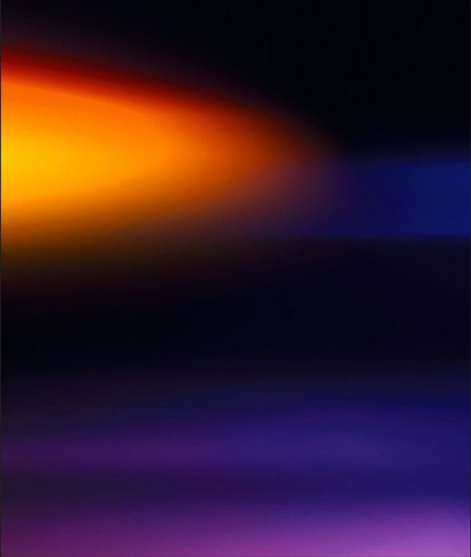
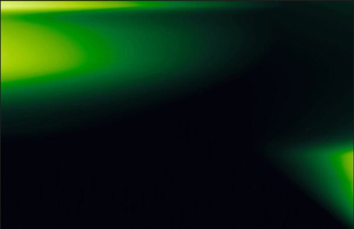
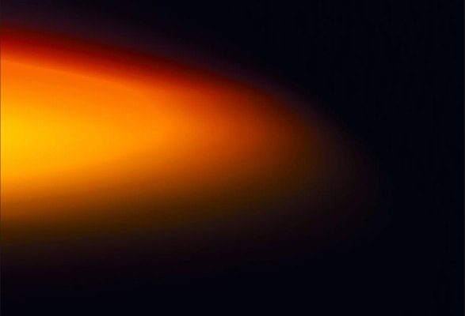
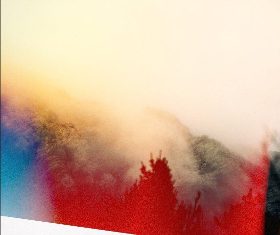

{{ grainLayer }}
{{ flashLayer }}

The next


DISP
'{{ clock }}
Shoots like a real disposable.
No filters. No gallery. Just plastic lens, real grain, and whatever the light decides to do.
{{ l.text }}
'{{ f.stamp }}
How it ruins your photos
{{ howTag }}
{{ f.tag }}
{{ f.title }}
{{ f.title }}
{{ f.caption }}

'{{ s.date }}
No gallery. No cloud. No account.
Every shot goes straight to your Photos and nowhere else. We never see them. No login, no feed, no algorithm.

{{ footLedLabel }}
The next
disposable is already in your pocket.
© 2026 DISP · Studio Sikira